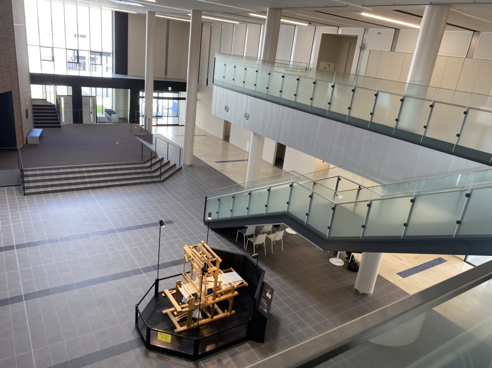

1．豊田工業大学生活の日記(学部1年編)
入学当初
学部一年は全寮制。寮はこの年できたばかりでめちゃくちゃ綺麗だった。 入寮日、寮生サポーター(1年生のサポートをしてくれる上級生)に迎えられ、寮生活の大まかなルールなどを教えてもらった。
寮内ではコモンと呼ばれるグループに分かれて生活する。 構成は寮サポ1人、一年生7,8人といった感じである。 コモン毎にリビング、キッチン、トイレ、洗濯機、乾燥機、シャワールームの設備があるコモンルームが与えられる。
私が入学した年度は、新校舎が工事中であり授業は旧校舎で行われた。
2．豊田工業大学生活の日記(学部2年編)
3．豊田工業大学生活の日記(学部3年編)
4．豊田工業大学生活の日記(学部4年編)
コロナで帰省
4月中旬、寮内は密になりやすいことから殆どの学生が実家に帰省することになった。 その間の寮費はなんとタダ！！ただでさえめちゃ安い寮費なのに有難い。
私も年末年始以来の実家に帰ることになり、結局8月初めまで名古屋には戻れなかった。
前期の授業はzoomとGoogle classroomを使って行われた。 期末試験と成績上位者への奨学金制度が無くなってしまい勉強の意欲が湧かない。
そんな中、有難いことに私の研究室の教授は自宅でできる実験を考えてくれたので実家で楽しく実験していた(笑)。 研究室によっては英語の論文をひたすら読まされたらしい。 卒業研究の中間報告書を書き終え、前期の仕事は無事に終わった。
約4か月ぶりの名古屋
実家暮らしも終わり名古屋の寮に戻ると、人が少なくガランとしていた。 そんな中、コモンルームに行くとショッキングな出来事が。
コバエが台所のごみ箱から沸いている…。
寮生活歴4年目の私にとって初めての出来事だった。 8月の暑い時期は実家に帰っていたからコバエに運よく出くわさなかっただけかもしれないが…。
生まれて初めての光景に2日間ほど立ち直れないでいたが、このままではゴミ出しにも行けず状況は悪くなる一方だ。
苦渋の決断の末、コバエの駆除を開始。
まず、近くのスギ薬局で「コバエがホイホイ」を購入。 とりあえずゴミ箱付近に置いておいた。

関連記事
豊工facebookはこちら